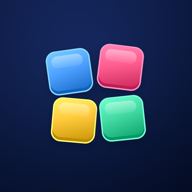

Dusa SolutionsPlan de contenido
Calendario
LMMJVSD
Posts

BLOKKUInstagram + TikTok · su propia marca
1Yo planeo y diseñoLa sesión de redes arma la agenda, los textos, las imágenes y el prompt de cada video.
2La sesión de Blokku hace los videosGraba juego real en tu Note (lo juega un bot sobre la app real) y arma cada video en Remotion.
3Yo reviso antes de que llegue aquíQue sea juego real, que no diga nada falso, el volumen y que los botones de la app no tapen el texto.
4Tú publicas desde aquíAbres lo del día → ① copias el texto → ② subes a Instagram o TikTok → lo marcas como Publicado.
¿Dónde está cada cosa?
- Todo vive en tu carpeta de Blokku:
Escritorio/Blokku/03-Marketing/Redes (oct-2026)/ - 1-PERFIL/: foto, bio y destacadas (cada carpeta trae su portada y sus historias).
- 2-PUBLICACIONES/: una carpeta por publicación, en orden, con el video o las fotos y los textos.
- 3-CRUDO/: donde sueltas tus grabaciones. Lo demás está en _INTERNO (no tocar): generadores, prompts y videos originales.
- MARCA-BLOKKU.md: el manual de marca (voz, colores y qué se puede decir y qué no).
Ritmo y reglas
- Videos martes, jueves y sábado; posts informativos los lunes; todo entre 7 y 9 pm.
- El mismo video va a TikTok y a Reels. Los carruseles van a Instagram y en modo foto a TikTok.
- Nunca decir «sin anuncios», iPhone, ni números que no se vean en el juego.
- Un parche se anuncia solo cuando ya aparece en Google Play.
Calendario de Blokku
VideoPost2 ese día
LMMJVSD